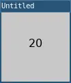

max()
Returns the largest value in a sequence of numbers.
max() accepts any amount of number arguments or a table of values and returns the largest number.
Examples

require("L5")
function setup()
size(100, 100)
fill(0)
background(200)
-- Calculate the maximum of 10, 5, and 20.
local m = max(10, 5, 20)
-- Style the text.
textAlign(CENTER)
textSize(16)
-- Display the max.
text(m, 50, 50)
describe('The number 20 written in the middle of a gray square.')
end
require("L5")
function setup()
size(100, 100)
fill(0)
background(200)
-- Create a table of numbers
local numbers = {10, 5, 20}
-- Calculate the maximum of the table
local m = max(numbers)
-- Style the text.
textAlign(CENTER)
textSize(16)
-- Display the max.
text(m, 50, 50)
describe('The number 20 written in the middle of a gray square.')
end
Syntax
max(n1, n2, .....)
max(table)
Parameters
| Parameter | |
|---|---|
| n1 | Number: first number to compare. |
| n2 | Number: second number to compare. |
| ... | Number: additional numbers to compare. |
| table | Table: table of numbers to compare. |
Returns
Number: maximum number.
Related
This reference page contains content adapted from p5.js and Processing by p5.js Contributors and Processing Foundation, licensed under CC BY-NC-SA 4.0.